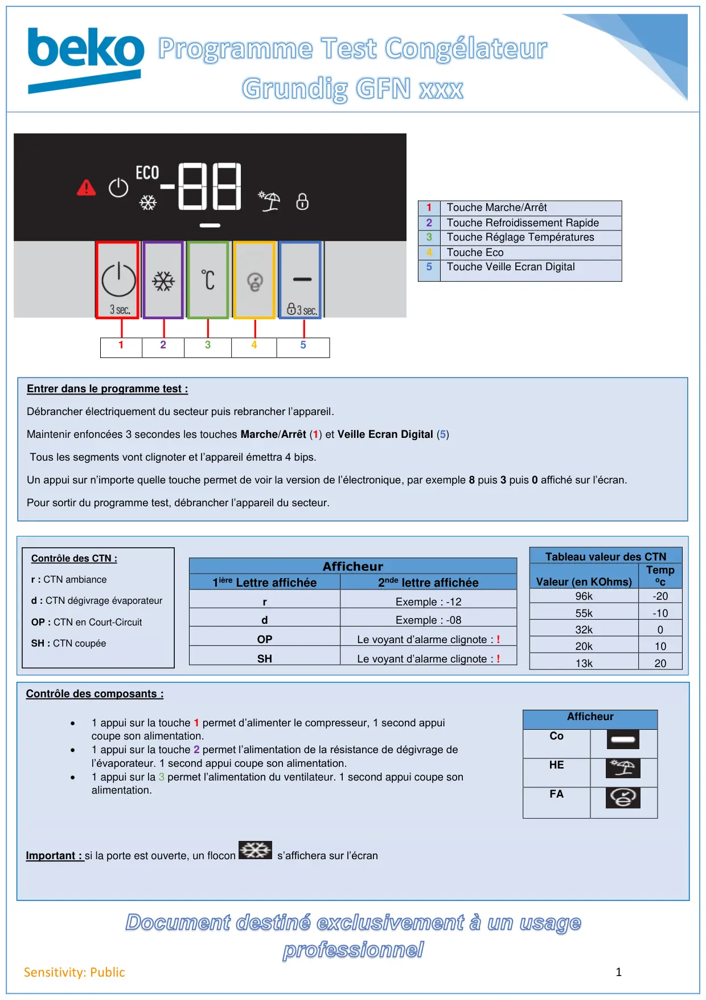
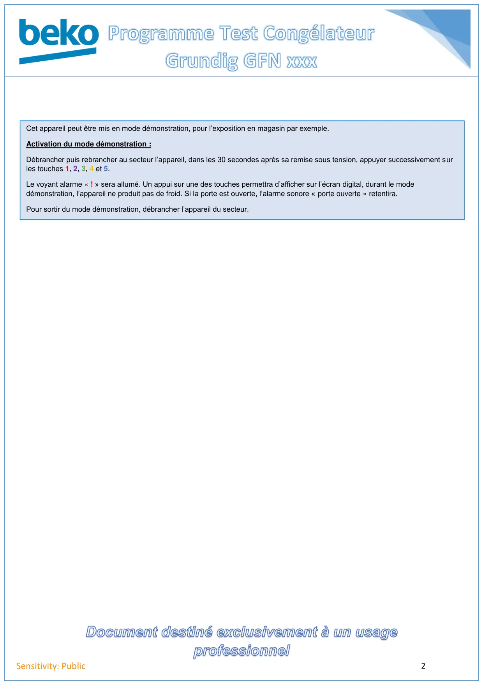

Prog Test Grundig GNF

1Sensitivity: Public1Touche Marche/Arrêt2Touche Refroidissement Rapide3Touche Réglage Températures4Touche Eco5Touche Veille Ecran Digital12345Afficheur1ière Lettre affichée2nde lettre affichéerExemple : -12dExemple : -08OPLe voyant d’alarme clignote : !SHLe voyant d’alarme clignote : !Tableau valeur des CTNValeur (en KOhms)Tempoc96k-2055k-1032k020k1013k20Entrer dans le programme test :Débrancher électriquement du secteur puis rebrancher l’appareil.Maintenir enfoncées 3 secondes les touches Marche/Arrêt (1) et Veille Ecran Digital (5)Tous les segments vont clignoter et l’appareil émettra 4 bips.Un appui sur n’importe quelle touche permet de voir la version de l’électronique, par exemple 8 puis 3 puis 0 affiché sur l’écran.Pour sortir du programme test, débrancher l’appareil du secteur.Contrôle des CTN :r : CTN ambianced : CTN dégivrage évaporateurOP : CTN en Court-CircuitSH : CTN coupéeContrôle des composants :AfficheurCoHEFAImportant : si la porte est ouverte, un flocons’affichera sur l’écran•1 appui sur la touche 1 permet d’alimenter le compresseur, 1 second appuicoupe son alimentation.•1 appui sur la touche 2 permet l’alimentation de la résistance de dégivrage del’évaporateur. 1 second appui coupe son alimentation.•1 appui sur la 3 permet l’alimentation du ventilateur. 1 second appui coupe sonalimentation.
1 / 2
2Sensitivity: PublicCet appareil peut être mis en mode démonstration, pour l’exposition en magasin par exemple.Activation du mode démonstration :Débrancher puis rebrancher au secteur l’appareil, dans les 30 secondes après sa remise sous tension, appuyer successivement surles touches 1, 2, 3, 4 et 5.Le voyant alarme « ! » sera allumé. Un appui sur une des touches permettra d’afficher sur l’écran digital, durant le modedémonstration, l’appareil ne produit pas de froid. Si la porte est ouverte, l’alarme sonore « porte ouverte » retentira.Pour sortir du mode démonstration, débrancher l’appareil du secteur.
2 / 2